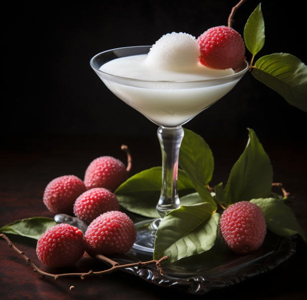

Welcome to my fabulous Lychee Martini recpie! Prepare yourself for a burst of exotic flavours that will transport you to a tropical paradise
This unlikely combo is truly wonderful; the traditional martini wtih an oriental twist! Lychee — a fruit considered a jewel of South Eastern China. Its resplendent tropical fragrences draws one in to trap them in with its bright unique flavour. Its outside is red and its texture resembles a prickly round strawberry
Whether you're at home or on vacation, this martini recipie is one that warms the heart and excites the mind. Now that it's in your cocktail portfolio you can impress your friends, family, or simply enjoy it yourself!
But it doesn't end with lychee, you can make a martini using any fruit!